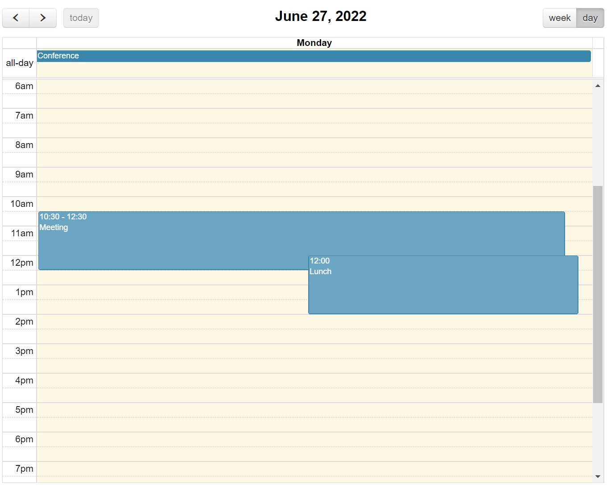

FullCalendar¶
1、快速开始¶
1.1、介绍¶
如何获取 FullCalendar 的代码，初始化日历和其他基本原则。
1.1.1、加载代码¶
在初始化日历之前，必须首先让 FullCalendar 的代码加载到页面上。你可以编写自己的 <script> 标签，也可以使用 Webpack 这样的构建系统。
<scritp> 标签
首先，从 发布页面 下载一个 ZIP 文件。解压后，找到文件 fullcalendar.js 和 fullcalendar.css。
然后，下载 FullCalendar 所依赖的两个 JavaScript 文件：jQuery 和 Moment。
然后，在页面的 <head> 中写下如下内容：
<link rel='stylesheet' href='fullcalendar/fullcalendar.css' />
<script src='lib/jquery.min.js'></script>
<script src='lib/moment.min.js'></script>
<script src='fullcalendar/fullcalendar.js'></script>
在加载 FullCalendar 的 JS 文件之前，要先加载 jQuery 和 Moment 的 JS 文件。
作为 NPM 模块（Webpack / Browserify）
使用 NPM 安装FullCalendar：
npm install jquery moment fullcalendar
然后，你必须安装一个构建系统，如 Webpack 或 Browserify，它将自动捆绑所有代码。查看使用 WebPack 的示例»
然后，编写一个模块，同时导入 jQuery 和 FullCalendar：
import $ from 'jquery';
import 'fullcalendar';
导入的 fullcalendar 不需要被命名。它将作为一个插件附在 jQuery 中。
1.1.2、初始化选项¶
将 FullCalendar 及其依赖项加载到页面上后，就可以编写初始化日历的 JS 代码。该代码必须在初始化之后执行。最好的方法是使用 jQuery 的 $(document).ready，例如：
$(function() {
// 页面已准备就绪，初始化日历...
$('#calendar').fullCalendar({
// 将您的选择和回调放在这里
})
});
上面的代码应在页面头的 <script> 标签中。该代码依赖于页面正文中具有 "calendar" ID 的元素。日历将放置在此 div 内：
<div id='calendar'></div>
就这样，应该可以在页面上看到一个基于月份的日历，上面没有任何事件。
Options
FullCalendar 的大多数文档都描述了影响日历外观或行为的选项。选项通常在初始化日历时设置，如下所示：
$('#calendar').fullCalendar({
weekends: false // 会隐藏周六和周日
});
一个重要的选项是 defaultView，它确定加载日历时首先显示哪个日历视图。
1.1.3、处理程序（Handlers）¶
处理程序（有时称为 “callbacks” ）有点像选项，但它们是在发生特殊情况时被调用的函数。在以下示例中，每当用户单击某一天时，都会出现一个警报框：
$('#calendar').fullCalendar({
dayClick: function() {
alert('a day has been clicked!');
}
});
动态添加处理程序
可以在日历初始化后使用 on 和 off 方法附加处理程序。此功能自2.4.0版起可用。
下面的示例动态绑定 dayClick 处理程序：
// 获取日历对象的方便实用程序。
// 你可以直接调用日历对象上的方法。
var calendar = $('#calendar').fullCalendar('getCalendar');
calendar.on('dayClick', function(date, jsEvent, view) {
console.log('clicked on ' + date.format());
});
1.1.4、方法（Methods）¶
方法提供了从 JavaScript 代码操纵日历的方法。方法对已初始化的日历的 jQuery 对象进行操作，使用熟悉的 fullCalendar 命令，但方式完全不同：
$('#calendar').fullCalendar('next');
这将调用 next 方法，并将迫使日历转移到下个 月/周/天。
如果想在每次调用方法时都避免使用 jQuery，则可以做这样的事情：
// 获取日历对象的方便实用程序
// 你可以直接调用日历对象上的方法。
var calendar = $('#calendar').fullCalendar('getCalendar');
calendar.next();
1.2、日期库¶
FullCalendar 将 MomentJS 作为其日期库。Moment 和 Duration 对象可用于很多设置，并且在整个 API 中使用它们。
1.2.1、Moment 对象¶
Moment 对象代表一个时间点，就像本地的 Date 对象一样，但要比它优越得多。
这个功能是由 MomentJS 提供的，这是一个第三方的开源库。FullCalendar 对这个功能做了一些扩展，以适应时间不明确和区域不明确的时刻。
在API中，大多数接受 Moment 的选项也会方便地接受 moment() 构造函数所接受的任何东西，包括：
- 日期字符串（强烈建议使用 ISO8601 标准）
- unix偏移量（自Unix Epoch以来的毫秒数）
- 本地日期对象
从头开始创建 Moments
大多数情况下，不必担心实例化你自己的 Moments。例如，当指定事件数组数据时，可以只写 ISO8601 字符串，让 FullCalendar 来处理解析工作。
然而，从头开始创建 Moments 有时是必要的。由于 Moment 是 FullCalendar 的一个附属品，全局的 Moment 构造器很可能对你有用。你应该能够像这样从头开始创建新的 Moments：
var m = moment();
要创建一个具有 FullCalendar 扩展格式和 "模糊" 功能的时刻（见下文），请使用 FullCalendar 的 moment、moment.utc 和 moment.parseZone 构造函数的版本：
var noTime = $.fullCalendar.moment('2014-05-01');
var local = $.fullCalendar.moment('2014-05-01T12:00:00');
var utc = $.fullCalendar.moment.utc('2014-05-01T12:00:00');
var noTZ = $.fullCalendar.moment.parseZone('2014-05-01T12:00:00');
要创建一个具有扩展功能的时刻，它已经在一个给定的日历的时区和地区设置范围内，使用 Calendar 对象的 moment 构造函数版本：
var calendar = $('#calendar').fullCalendar('getCalendar');
var m = calendar.moment();
模糊时间的时刻
对于 FullCalendar，Moment 对象已经被扩展，以表示没有时间的时刻，或 "模糊时间的时刻"。在引擎盖下，这些时刻以 UTC 模式表示，时间为 00:00:00。
要创建一个，可以使用 FullCalendar 的 moment、moment.utc 或 moment.parseZone 构造函数，同时使用一个没有时间部分的 ISO8601 字符串：
var m = $.fullCalendar.moment('2014-01-22');
m.hasTime();
=> false
正如你所看到的，可以通过使用 hasTime 方法来查询一个时刻是否有模糊的时间。这个方法只适用于通过 FullCalendar 的某个时刻构造函数创建的时刻。
也可以通过使用 stripTime 方法将一个有时间的时刻转换为模糊的。这个方法只适用于通过 FullCalendar 的某个时刻构造函数创建的时刻：
var m = $.fullCalendar.moment('2014-01-22T05:00:00');
m.stripTime();
m.hasTime();
=> false
format 和 toISOString 方法已经被修改，这样，时间不明确的时刻就不会返回字符串中的时间部分：
m.format();
=> "2013-01-22"
模糊时区的时刻
Moment 对象也被扩展为代表一个没有指定时区的日期。在引擎盖下，这些时刻以 UTC 模式表示。
要创建一个，可以使用 FullCalendar 的 moment.parseZone 构造函数的版本，同时使用一个没有时区偏移部分的 ISO8601 字符串。
var m = $.fullCalendar.moment.parseZone('2014-01-22T06:00:00');
m.hasZone();
=> false
正如你所看到的，可以通过使用 hasZone 方法来查询一个时刻是否有模糊的区域。这个方法只适用于通过 FullCalendar 的某个时刻构造函数创建的时刻。
也可以通过使用 stripZone 方法将一个有时区的时刻转换成模糊的 。这个方法只适用于通过 FullCalendar 的某个时刻构造函数创建的时刻：
var m = $.fullCalendar.moment('2014-01-22T05:00:00-07:00');
m.stripZone();
m.hasZone();
=> false
format 和 toISOString 方法已被修改，使模糊时区的时刻不返回字符串中的时区偏移部分：
m.format();
=> "2014-01-22T05:00:00"
2、整体显示¶
2.1、工具栏¶
日历顶部和底部包含按钮和其他控件的区域。
2.1.1、标题（header）¶
定义日历顶部的按钮和标题。
Object/false, default:
{
left: 'title',
center: '',
right: 'today prev,next'
}
将标题选项设置为 false 将不显示标题。可以为对象提供特性 left、center 和 right 三个属性。这些属性包含以逗号/空格分隔的字符串。用逗号分隔的值将相邻显示。用空格分隔的值将以较小的间距显示。字符串可以包含以下任意值：
text- 包含当前月/周/日的文本prev- 用于将日历向后移动一个月/周/天的按钮next- 用于将日历向前移动一个月/周/天的按钮prevYear- 用于将日历向后移动一年的按钮nextYear- 用于将日历向前移动一年的按钮today- 用于将日历移动到当前月/周/日的按钮- 视图名称 - 将日历切换到任何可用视图的按钮
为属性指定空字符串将导致其不显示文本/按钮。
2.2、调整大小¶
如何控制日历的尺寸。
2.2.1、高度（height）¶
设置整个日历的高度，包括标题和页脚。
Integer, Function, "parent", "auto"
默认情况下，此选项是未设置的，日历的高度由 aspectRatio 计算。
如果指定了一个整数，则将保证日历的高度为精确的像素高度。如果内容不适合这个高度，就会出现滚动条（2.1.0版本的新内容）。
如果指定了一个函数，这个函数将在每次请求高度更新时被调用。这个函数应该返回一个像素值。
如果指定了 "parent"，日历的高度将与它的父容器元素的高度一致。
如果指定了 "auto"，视图的内容将采用自然高度，不会使用滚动条。(2.1.0版新增）。
height 用法示例：
$('#calendar').fullCalendar({
height: 650
});
Setter
可以在初始化后动态设置日历的高度：
$('#calendar').fullCalendar('option', 'height', 700);
3、视图¶
3.1、月视图¶
月视图以类似表格的形式显示当前月份的天数，通常还有上个月和下个月的几天。它可以像这样初始化：
$('#calendar').fullCalendar({
defaultView: 'month'
});

下面的选项是专门针对月视图的。然而，在整个文档中，还有许多其他的选项会影响到月视图的显示，比如与本地相关的选项和日期/时间显示选项。
fixedWeekCount
确定月视图中显示的周数。
Boolean, default: true
如果为 true，日历将始终显示 6 周。如果为 false，日历将有 4 周、5 周或 6 周，具体取决于月份。
showNonCurrentDates
在月视图中，上个月或下个月的日期是否应该显示。
Boolean, default: true
禁用的天数不会渲染事件。
在月视图中设置为 false 时：

在月视图中设置为 true 时（默认值）：

3.2、日程视图¶
议程视图显示一个或多个水平天数，以及垂直轴上的时间轴，通常是午夜到午夜。两个预定义的议程视图是 agendaDay 和 agendaWeek。它们可以像这样被初始化：
$('#calendar').fullCalendar({
defaultView: 'agendaWeek'
});

$('#calendar').fullCalendar({
defaultView: 'agendaDay'
});

可以使用类型为 agenda 的自定义视图创建其他工期的议程视图。
下面的选项是针对议程视图的。然而，在整个文档中，还有许多其他选项影响到议程视图的显示，例如与本地有关的选项和日期/时间显示选项。
allDaySlot
是否在日历顶部显示 “全天” 插槽。
Boolean, default: true
如果使用 false 隐藏，则日程视图中将不会显示全天事件。
allDayText
日历顶部标题为 “全天” 的文本。
String, default: 'all-day'
默认值取决于当前区域设置。
3.3、列表视图¶
列表视图在一个简单的垂直列表中显示特定时间间隔内的事件。如果在一个特定的时间间隔内没有事件，就会显示 noEventsMessage。列表视图是在 FullCalendar 3.0.0 版本中添加的。 有 4 个预设的列表视图：listDay、listWeek、listMonth 和 listYear。你可以像这样初始化一个列表视图：
$('#calendar').fullCalendar({
defaultView: 'listWeek'
});

如果需要不同的时间间隔，可以创建类型为 list 的自定义视图。
下面的选项是针对列表视图的。然而，在整个文档中，还有许多其他选项影响到列表视图的显示，比如 eventRender 和 eventClick。
**listDayFormat **
一个日期格式化字符串，影响列表视图中日期标题左侧的文本。
String, false

如果指定 false，则不显示文本。
listDayAltFormat
一个日期格式字符串，影响列表视图中日期标题右侧的文本。
String, false

如果指定 false，则不显示文本。
noEventsMessage
显示在列表视图中间的文本，提醒用户在给定范围内没有事件。
String, default: "No events to display"
4、日期和时间¶
4.1、日期单击和选择¶
检测用户何时单击日期或时间。让用户能够使用鼠标或触摸设备选择多个日期或时间段。
dayClick
允许用户通过点击和拖动来突出显示多个日期或时间段。
Boolean, default: false
要让用户通过点击和拖动进行选择，这个选项必须设置为 true。
unselectAuto
单击页面上的其他位置是否会导致清除当前选择。
Boolean, default: true
此选项仅在 selectable 设置为 true 时生效。
4.1.1、回调（CALLBACKS）¶
dayClick
当用户单击日期或时间时触发。
function( date, jsEvent, view, [ resourceObj ] ) { }
date 持有被点击的那一天的 Moment。如果一个全天的区域被点击了，那么这个时刻将是模糊的时间。如果议程周或议程日视图中的一个时段被点击了，date 将拥有该时段的时间。
jsEvent 持有 jQuery 事件的低层次信息，如点击坐标。
view 被设置为当前的视图对象。
在回调函数中，this 被设置为被点击的日期的 <td>。
下面是一个展示所有这些变量的例子：
$('#calendar').fullCalendar({
dayClick: function(date, jsEvent, view) {
alert('Clicked on: ' + date.format());
alert('Coordinates: ' + jsEvent.pageX + ',' + jsEvent.pageY);
alert('Current view: ' + view.name);
// 改变一天的背景颜色只是为了好玩
$(this).css('background-color', 'red');
}
});
当用户单击列表视图中的日标题时，不会触发
dayClick触发器。
select
选择日期/时间时触发。
function( start, end, jsEvent, view, [ resource ] )
start 是一个 Moment，表示选择的开始。
end 是一个表示选择结束的 Moment。它是一个排他性的值，所以如果选择是 all-day（全天）的，而最后一天是星期四，end 将是星期五。
你可以通过调用 hasTime 来测试 start/end 是定时的还是全天的。
jsEvent 持有 jQuery 事件的信息，如鼠标坐标。如果 select 是通过 select 方法触发的，jsEvent 则为 undefined。
5、事件¶
5.1、事件数据¶
如何将事件添加到日历中。如何在初始加载后动态操作它们。
5.1.1、事件（数组）¶
将显示在日历上的 Event 对象数组。
以下是如何指定事件数组的示例：
$('#calendar').fullCalendar({
events: [
{
title : 'event1',
start : '2010-01-01'
},
{
title : 'event2',
start : '2010-01-05',
end : '2010-01-07'
},
{
title : 'event3',
start : '2010-01-09T12:30:00',
allDay : false // 将显示时间
}
]
});
确保数组中最后一个事件后没有逗号！这将使 Internet Explorer 窒息。
5.1.2、事件（JSON feed）¶
访问一个 JSON feed 的 URL 是 FullCalendar 获取 Event 对象的方式之一。当用户点击上一页/下一页或者改变日历视图时，就会发生此操作。FullCalendar 会确定它需要的事件的日期范围，并在 GET 参数中传递该信息。
GET 参数名称将由 startParam 和 endParam 选项确定。（默认情况下为 start 和 end）。
这些参数的值将是 ISO8601日期字符串（如 2013-12-01）。关于精确的行为，请参见时区文档。
以下是 FullCalendar 可能访问的 URL，以从 JSON feed 获取新事件数据：
/myfeed.php?start=2013-12-01&end=2014-01-12&_=1386054751381
_ 参数是自动插入的，以防止浏览器缓存结果（更多内容见下文）。
如果你需要访问一个在不同域中的 feed，你可以使用 JSONP，在你的 URL 中加一个 ?（见 $.ajax 的 JSONP 讨论）。
JSON日期字符串格式
以下是 JSON feed 中开始和结束日期的 ISO8601日期字符串的示例：2015-03-17
FullCalendar 将接受用小时、分钟、秒和毫秒写入的 ISO8601日期字符串：2015-03-17T13:13:55.008
FullCalendar 还接受带有时区偏移的 ISO8601日期字符串（请参阅时区文档）：2015-03-17T13:13:55+0800、2015-03-17T13:13:55-0400
注意：FullCalendar 不接受
new Date()JavaScript构造函数作为日期字符串的一部分（例如new Date(2010, 12, 25)），因为 JSON 格式不支持用new操作符进行对象实例化。日期字符串必须使用 ISO8601标准（YYYY-MM-DDTHHss.ssZ）编写。
带有 ISO8601日期字符串的脚本示例：
$('#calendar').fullCalendar({
events: [
{
title: 'Event Title1',
start: '2015-03-17T13:13:55.008',
end: '2015-03-19T13:13:55.008'
},
{
title: 'Event Title2',
start: '2015-03-17T13:13:55-0400',
end: '2015-03-19T13:13:55-0400'
}
]
});
毫秒级的时间也可以添加到 JSON feeds 中。需要注意的是，这个数字必须以毫秒为单位，例如 1426612435000（"March 17, 2015 5:13:55 PM"），而不是秒 1426612435。
具有Unix时间戳的脚本示例：
$('#calendar').fullCalendar({
events: [
{
title: 'Event Title',
start: 1426612435000,
end: 1426785379000
}
]
});
jQuery $.ajax选项
也可以在同一个对象中指定任何 jQuery 的 $.ajax 选项，这允许你轻松地传递额外的参数给你的 feed 脚本，以及监听ajax 的回调：
$('#calendar').fullCalendar({
events: {
url: '/myfeed.php',
type: 'POST',
data: {
custom_param1: 'something',
custom_param2: 'somethingelse'
},
error: function() {
alert('there was an error while fetching events!');
},
color: 'yellow', // a non-ajax option
textColor: 'black' // a non-ajax option
}
});
动态 data 参数
date 参数，通过 GET 或 POST 向你的 JSON 脚本发送信息，也可以被指定为一个函数，以便发送动态值：
$('#calendar').fullCalendar({
events: {
url: '/myfeed.php',
data: function() { // 返回对象的函数
return {
dynamic_value: Math.random()
};
}
}
});
5.1.3、事件（函数）¶
一个自定义函数，用于以编程方式生成 Event 对象。
function( start, end, timezone, callback ) { }
FullCalendar 在需要新的事件数据时都会调用这个函数。当用户点击上一页/下一页或切换视图时，就会触发这个功能。
此函数将提供 start 和 end 参数，这些参数表示日历需要事件的范围。
timezone 是一个 string/boolean，描述了日历的当前时区。它是时区选项的精确值。
它也将被赋予 callback，一个必须在自定义事件函数产生其事件时被调用的函数。事件函数有责任确保回调是用一个 Event 对象的数组来调用的。
下面的示例演示如何使用事件函数从假设的 XML feed 获取事件：
$('#calendar').fullCalendar({
events: function(start, end, timezone, callback) {
$.ajax({
url: 'myxmlfeed.php',
dataType: 'xml',
data: {
// 我们假设的 feed 需要 UNIX 时间戳
start: start.unix(),
end: end.unix()
},
success: function(doc) {
var events = [];
$(doc).find('event').each(function() {
events.push({
title: $(this).attr('title'),
start: $(this).attr('start') // will be parsed
});
});
callback(events);
}
});
}
});
然而，如果有选择，JSON 是一个更好的主意，因为可以直接指定一个feed URL。
5.1.4、Event 对象¶
一个普通的 JavaScript 对象，FullCalendar 用它来存储一个日历事件的信息。下面是它的属性：
| 属性名 | 描述 |
|---|---|
| id | String/Integer。可选的。唯一标识给定的事件。重复事件的不同实例应该都有相同的 id。 |
| title | String。必须的。事件元素上的文本 |
| allDay | true 或 false。可选的。一个事件是否发生在一个特定的时间段。这个属性会影响事件的时间是否被显示。另外，在议程视图中，决定它是否显示在 “全天” 部分。如果没有明确指定这个值，如果定义了allDayDefault，就会使用它。如果其他都失败了，FullCalendar 会尝试猜测。如果 start 或 end 值有一个 "T" 作为 ISO8601日期字符串的一部分，allDay 将变为 false。否则，它将是 true。不要在你的 true/false 周围加入引号。这个值是一个布尔值，而不是一个字符串! |
| start | 事件开始的日期/时间。必需的。一个类似于 Moment 的输入，像一个 ISO8601 字符串。在整个 API 中，这将成为一个真正的 Moment 对象。 |
| end | 事件结束的唯一日期/时间。可选的。一个类似于 Moment 的输入，像一个 ISO8601字符串。在整个 API中，这将成为一个真正的 Moment 对象。它是事件结束后的第一时间。例如，如果一个事件的最后一天是星期四，那么事件的结束时间将是星期五的 00:00:00! |
| url | String。可选的。当该事件被用户点击时将被访问的 URL。关于控制这种行为的更多信息，请参见eventClick 回调。 |
| className | String/Array。可选的。一个 CSS class（或 class 的数组），将被附加到这个事件的元素上。 |
| editable | true 或 false。可选的。覆盖此单个事件的 editable 选项。 |
| startEditable | true 或 false。可选的。覆盖此单个事件的 eventStartEditable 选项。 |
| durationEditable | true 或 false。可选的。覆盖此单个事件的 eventDurationEditable 选项。 |
| resourceEditable | true 或 false。可选的。覆盖此单个事件的 eventResourceEditable 选项。 |
| rendering | 允许对事件进行交替渲染，例如背景事件。可以是空的，也可以是 "background" 或 "inverse-background"。 |
| overlap | true 或 false。可选的。覆盖此单个事件 eventOverlap 选项。如果是 false，可以防止此事件被拖动/调整到其他事件上。也防止其他事件在此事件上被拖动/调整大小。 |
| constraint | 一个事件 ID，"businessHours"，对象。可选的。覆盖此单个事件的 eventConstraint 选项。 |
| color | 设置一个事件的背景和边框颜色，就像日历范围内的 eventColor 选项一样。 |
| backgroundColor | 设置一个事件的背景颜色，就像日历范围内的 eventBackgroundColor 选项一样。 |
| borderColor | 设置一个事件的边框颜色，就像日历范围内的 eventBorderColor 选项一样。 |
| textColor | 设置一个事件的文本颜色，就像日历范围内的 eventTextColor 选项一样。 |
非标准字段
除了上述字段外，还可以在每个 Event 对象中包含自己的非标准字段。FullCalendar 不会修改或删除这些字段。例如，开发人员经常包括一个描述字段，用于回调，如 eventRender。
5.1.5、方法¶
updateEvent
改变单个事件的数据，重新渲染该事件。
.fullCalendar( ‘updateEvent’, event )
event 必须是事件的原始 Event 对象，而不仅仅是重构对象。原始 Event 对象可以通过回调（如 eventClick）或 clientEvents 方法获得。
以下是单击后如何更新事件：
$('#calendar').fullCalendar({
eventClick: function(event, element) {
event.title = "CLICKED!";
$('#calendar').fullCalendar('updateEvent', event);
}
});
removeEvents
从日历中删除事件。
.fullCalendar( ‘removeEvents’ [, idOrFilter ] )
如果省略 idOrFilter，则删除所有事件。
如果 idOrFilter 是一个 ID，则将删除所有具有相同 ID 的事件。
idOrFilter 也可以是一个过滤器函数，它接受一个 Event 对象参数，如果应该删除它，则返回 true。
5.2、事件显示¶
如何控制日历上事件的外观。
eventColor
设置日历上所有事件的背景和边框颜色。
String
更改日历上所有事件的颜色，如下所示：
$('#calendar').fullCalendar({
events: [
// my event data
],
eventColor: '#378006'
});
可以使用任何 CSS 颜色格式，如 #f00、#ff0000、rgb(255,0,0)或 red。
eventBackgroundColor、eventBorderColor 和eventTextColor 选项可用于更细化。
eventBackgroundColor
设置日历上所有事件的背景色。
String
可以使用任何 CSS 颜色格式，如 #f00、#ff0000、rgb(255,0,0)或 red。
eventBorderColor
设置日历上所有事件的边框颜色。
String
可以使用任何 CSS 颜色格式，如 #f00、#ff0000、rgb(255,0,0)或 red。
eventTextColor
设置日历上所有事件的文本颜色。
String
可以使用任何 CSS 颜色格式，如 #f00、#ff0000、rgb(255,0,0)或 red。
5.2.1、方法¶
renderEvent
在日历上呈现一个新事件。
.fullCalendar( ‘renderEvent’, event [, stick ] )
event 必须是具有 title 和 start 的 Event 对象。
通常情况下，一旦日历重新获取其事件源（例如：点击上一个/下一个），该事件就会消失。然而，将 stick 设置为 true 将导致事件被永久地固定在日历上。
5.3、事件单击和悬停¶
了解事件何时被单击或悬停。
eventClick
当用户单击事件时触发。
function( event, jsEvent, view ) { }
event 是保存事件信息（日期、标题等）的 Event 对象。
jsEvent 保存 jQuery 事件和低级信息，例如单击坐标。
view 保存当前视图对象。
在回调函数中，this 被设置为事件的 <div> 元素。
下面是一个演示所有这些变量的示例：
$('#calendar').fullCalendar({
eventClick: function(calEvent, jsEvent, view) {
alert('Event: ' + calEvent.title);
alert('Coordinates: ' + jsEvent.pageX + ',' + jsEvent.pageY);
alert('View: ' + view.name);
// 更改边框颜色
$(this).css('border-color', 'red');
}
});
通常，如果 Event 对象设置了其 URL 属性，则单击事件将导致浏览器访问事件的 URL（在同一窗口/选项卡中）。从函数中返回 false 可以防止这种情况发生
通常情况下，开发者希望一个事件的 URL 在不同的标签页或弹出窗口中打开。下面的例子显示了如何做到这一点：
$('#calendar').fullCalendar({
events: [
{
title: 'My Event',
start: '2010-01-01',
url: 'http://google.com/'
}
// other events here
],
eventClick: function(event) {
if (event.url) {
window.open(event.url);
return false;
}
}
});
5.4、事件拖动和调整大小¶
如何启用和控制用户可以拖放和调整事件的大小。首先将 editable 设置设为 true。如果想允许外部元素被放到日历上，请访问 droppable、drop 和 eventReceive 文章。
editable
确定是否可以修改日历上的事件。
Boolean, default: false
这确定是否可以拖动事件并调整其大小。同时启用/禁用两者。如果不想两者兼得，请改用更具体的 eventStartEditable 和 eventDurationEditable。
可以使用 Event 对象的 editable 属性在每个事件的基础上覆盖此选项。但是，无法拖动或调整后台事件的大小。
eventStartEditable
允许通过拖动编辑事件的开始时间。
Boolean, default: true
eventDurationEditable
允许通过调整大小来编辑事件的持续时间。
Boolean, default: true
5.4.1、回调（CALLBACK）¶
eventDrop
当拖动停止且事件已移至其他日期/时间时触发。
function( event, delta, revertFunc, jsEvent, ui, view ) { }
event 是一个 Event 对象，持有事件的信息（日期、标题等）。在事件的 start/end 时调用 hasTime，以查看它是否被丢在一个定时或全天的区域。
delta 是一个Duration对象，表示事件移动的时间量。版本2.0.1及更高版本中提供。
revertFunc 是一个函数，如果调用它，它会将事件的开始/结束日期还原为拖动之前的值。如果 ajax 调用失败，这很有用。
jsEvent 持有 jQuery 事件的低层次信息，如鼠标坐标。
ui 持有一个空对象。在 2.1 版本之前，jQuery 的 UI 对象。
view 保存当前视图对象。
当外部事件到达日历时，不会调用 eventDrop。改为调用 eventReceive。
示例：
$('#calendar').fullCalendar({
events: [
// events here
],
editable: true,
eventDrop: function(event, delta, revertFunc) {
alert(event.title + " was dropped on " + event.start.format());
if (!confirm("你确定要更改吗？")) {
revertFunc();
}
}
});
eventResize
当调整大小停止且事件持续时间已更改时触发。
function( event, delta, revertFunc, jsEvent, ui, view ) { }
event 是保存事件信息（日期、标题等）的 Event 对象。
delta 是一个 Duration 对象，表示事件的开始或结束 延长或缩短的时间量。
revertFunc 是一个函数，如果调用它，它会将事件的结束日期还原为拖动之前的值。如果 ajax 调用失败，这很有用。
jsEvent 持有 jQuery 事件的低层次信息，如鼠标坐标。
ui 持有一个空对象。在 2.1 版本之前，jQuery 的 UI 对象。
view 保存当前视图对象。
示例：
$('#calendar').fullCalendar({
events: [
// events here
],
editable: true,
eventResize: function(event, delta, revertFunc) {
alert(event.title + " end is now " + event.end.format());
if (!confirm("这样可以吗？")) {
revertFunc();
}
}
});
6、国际化¶
6.1、语言环境¶
你可以为某些语言（又称 “地区”）定制日历。地区设置是最重要的，因为它同时设置了许多其他选项的默认值。
6.1.1、local¶
自定义日历的语言和本地化选项。
A String locale code. default: "en"
此选项会影响许多事情，例如：
- 按钮中的文本，由
header定义 - 包含月份或星期几字符串的文本
- 日期格式字符串，如
timeFormat weekNumberCalculationfirstDay
如何使用其他地区
首先需要加载 local JavaScript 数据文件才能使用它。这些文件包含在 FullCalendar 下载的 locale/ 目录中。在加载主 FullCalendar 库后，必须通过 <script> 标签加载它们。
<script src='fullcalendar/fullcalendar.js'></script>
<script src='fullcalendar/locale/es.js'></script>
<script>
$(function() {
$('#calendar').fullCalendar({
});
});
</script>
如果只是加载一个区域设置，则无需指定 local 选项。FullCalendar 将查看最近加载的 local 文件并使用它。
但是，如果加载了多个语言环境文件，或者加载了联合的 locale-all.js 文件，则必须通过 local 选项明确指定使用哪个语言环境：
<script src='fullcalendar/fullcalendar.js'></script>
<script src='fullcalendar/locale-all.js'></script>
<script>
$(function() {
$('#calendar').fullCalendar({
locale: 'es'
});
});
</script>
MomentJS and jQuery UI Datepicker
当你加载 FullCalendar 的 local 文件时，它也会加载 MomentJS 和 jQuery UI Datepicker 的翻译（如果该库已经在页面上）。只要确保在 FullCalendar 的 local 文件之前包含 Moment 和 Datepicker 的 <script> 标签就可以了。
<script src='lib/moment.js'></script>
<script src='lib/jquery-ui.custom-datepicker.js'></script>
<script src='fullcalendar/fullcalendar.js'></script>
<script src='fullcalendar/locale-all.js'></script>
7、第三方机构¶
7.1、Vue¶
FullCalendar 与 Vue JavaScript 框架无缝集成。它提供了一个与 FullCalendar 标准 API 的功能完全匹配的组件。
这个包是在 MIT 许可证下发布的，与 FullCalendar 的标准版本使用的许可证相同。有用的链接：
- 浏览 Github 仓库
- Bug 报告说明
- 示例项目：
- Vue 2 示例（使用 Webpack 和 css-loader）
- Vue 3 示例 (使用 Vite）
首先是安装与 FullCalendar 相关的依赖项，你需要 FullCalendar 核心、Vue 适配器以及你打算使用的插件。
-
如果使用 Vue2：
npm install --save @fullcalendar/core, @fullcalendar/vue
安装需要使用的 FullCalendar 插件，比如 @fullcalendar/daygrid：
npm install --save @fullcalendar/daygrid
然后你可以开始编写一个利用 <FullCalendar> 组件的父组件：
<template>
<FullCalendar :options="calendarOptions" />
</template>
<script>
import FullCalendar from '@fullcalendar/vue'
import dayGridPlugin from '@fullcalendar/daygrid'
export default {
components: {
FullCalendar // make the <FullCalendar> tag available
},
data() {
return {
calendarOptions: {
plugins: [ dayGridPlugin ],
initialView: 'dayGridMonth'
}
}
}
}
</script>
7.1.1、插件索引¶
FullCalendar 提供以下软件包（仅列出我常用的，详见官网）：
| 包名 | 功能/视图 |
|---|---|
| @fullcalendar/core | 提供 Calendar 类等。 |
| @fullcalendar/interaction | 检测日期点击动作、选择动作和事件拖放及大小调整。 |
| @fullcalendar/daygrid | 提供月和日的网格视图：dayGridYear、dayGridMonth、dayGridWeek、dayGridDay、dayGrid（通用）。 |
| @fullcalendar/vue | 提供 Vue 2 组件。 |